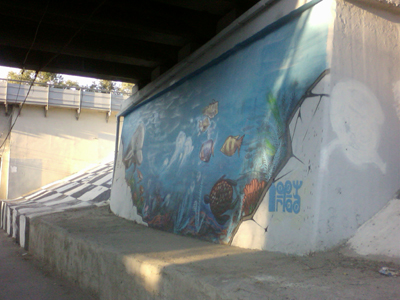
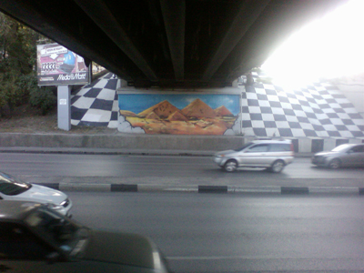
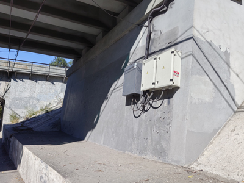
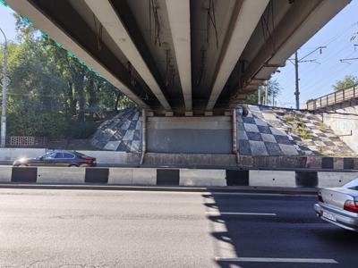
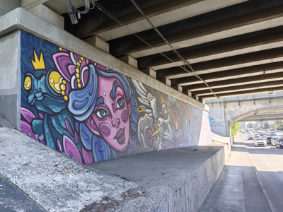
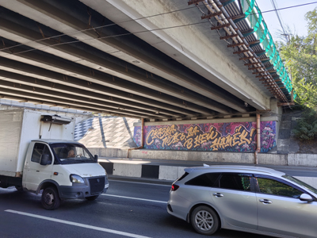

Муралы под Тремя мостами




Три моста, расположенные друг за другом, продолжая улицу Нансена — место в нашем городе довольно известное. Или точнее было бы сказать, места. Такая троица мостов проложена над проспектом Нагибина и дальше над улицей Стадионной. Но наиболее известны все-таки мосты на пересечении с проспектом Нагибина.
Прежде стены под мостами просто красили. Но уже давно их время от времени оформляют муралами, которые меняют раз в несколько лет. Почему каждый раз их меняют, а не реставрируют уже сделанные, не знаю. Некоторые муралы мне было жаль, когда их убрали. С другой стороны, такое обновление облика городских улиц, пожалуй, даже к лучшему.




В 2010 году я сфотографировал два мурала под Тремя мостами: подводный пейзаж и пустынный. В 2026 году стены, на которых прежде были те муралы, оказались просто закрашенными в ровный серый цвет. Если сравнивать внешний вид места как было задумано в проекте с одного и того же ракурса, получается, будто муралов теперь нет вообще. Чтобы не возникало такого заблуждения, я сделал дополнительные фотографии, на которых видны новые муралы. Теперь они нарисованы на других стенах тех же мостов. Интересно, как будет выглядеть это место еще через несколько лет?



